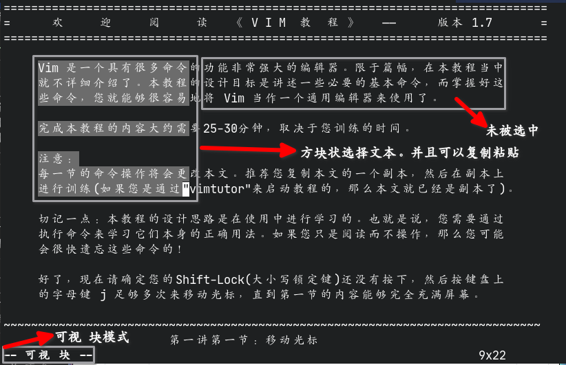

Vim/Neovim使用笔记
Table of Contents
1. 基本操作
Vim官方已经有了一份中文的教程了，只需要在终端执行
vimtutor即可查看
1.1. 模式介绍
Vim分为多个模式，正常情况下Vim处于 正常模式 。在其他模式下按下 ESC 键可以返回正常模式。在正常模式下，可以通过各种按键进入其他模式或者执行什么文件的编辑功能。列表：
| 名称 | 作用 | 进入方法 |
|---|---|---|
| 正常模式 | vim的默认模式，其他模式的入口 | 按下ESC返回 |
| 命令模式 | 可以执行命令、保存文件、退出程序等操作 | 在正常模式输入`:`进入，可以输入命令回车执行 |
| 插入模式 | 用于插入文本到文件中 | 按下`i` `I` `a` `A` `s` `S` `c` `o` `O`等 |
| 替换模式 | 用于输入新的字符并将源字符替换 | 按下`R`进入 |
| 可视模式 | 选择文本 | 按下`v`进入 |
| 可视 块模式 | 选择文本，但是可以以方块状的模式剪贴 | 按下`Ctrl-v`进入 |
| 可视 行模式 | 选择文本，但是直接选择整行（未发现有什么用） | 按下`Shift-v`进入 |
| 选择模式 | 选择文本，按下字符替换掉选择的字符，并进入插入模式 | 按下`v`进入（任意）可视模式后再按下`Ctrl-g`进入选择模式，也有块、行模式的区分，基于进入的是什么可视模式进入 |
1.2. 正常模式
移动（官方教程原文）：
^
k 提示： h 的键位于左边，每次按下就会向左移动。
< h l > l 的键位于右边，每次按下就会向右移动。
j j 键看起来很象一支尖端方向朝下的箭头。
v
此操作只能够在正常模式下使用
操作表：
| 按键 | 功能 |
|---|---|
| a | 进入插入模式，插入光标向右移动一字符，在光标左边插入 |
| A | 进入插入模式，插入光标移动到行末，在光标左边插入 |
| cw | 移除一个字符从光标处到单词末（进入插入模式） |
| ce | 移除字符到行末（进入插入模式） |
| d[n]d | 移除n行，不指定n则为一行 |
| [n]dd | 移除n行，不指定n则为一行 |
| dw | 移除一个单词 |
| e | 移动到（下一个）词末 |
| [n]gg | 移动到第n行，不指定n则移动到文件首 |
| [n]G | 移动到第n行，不指定n则移动到文件末 |
| Ctrl-g | 显示文件信息 |
| [n]h | 向左移动n个字符，n默认（不指定时）为1 |
| i | 进入插入模式，插入光标不动，在光标左边插入 |
| I | 进入插入模式，插入光标移动到行首，在光标左边插入 |
| [n]j | 向下移动n行，n默认（不指定时）为1 |
| [n]k | 向上移动n行，n默认（不指定时）为1 |
| [n]l | 向右移动n个字符，n默认（不指定时）为1 |
| n | 搜索事的下一个搜索目标 |
| N | 搜索事的上一个搜索目标 |
| o | 向下新建一行并进入插入模式 |
| O | 向上新建一行并进入插入模式 |
| p | 在光标的右侧粘贴vim缓存的内容，可以通过`c` `d` `y`等方式向缓存区写入内容（独立于系统的剪贴板） |
| P | 效果同`p`但是内容在光标左边粘贴内容 |
| r | 替换一个字符 |
| R | 进入替换模式，输入的字符将会替换文件原有内容 |
| Ctrl-r | 撤销*undo*操作（即撤销撤销操作） |
| s | 基本等同于`c` |
| u | *undo*即撤销之前的操作 |
| v | 进入**可视模式**选择文本（选择好后可以键入 `:w filename` 将选择的内容保存在文件 filename 中） |
| Ctrl-v | 进入**可视 块**模式选择文本，可以以方块状选择文本 |
| Shift-v | 进入**可视 行**模式选择文本，不过是直接一行行地选择文本 |
| [Ctrl/Shift]+v+Ctrl+g | 选择文本，按下字符替换掉选择的字符，并进入插入模式 |
| w | 移动到（下一个）词首，也可以作为worlds单位供其他动作使用 |
| [n]x | 移除光标所处位置的（n个字符，默认为1个）字符，但不会进入插入模式 |
| y | 复制选中的内容到缓存区 |
| yy | 复制光标所在行的内容 |
| / | 搜索文件内容，后接内容（从文件首向文件末排列搜索目标） |
| ? | 搜索文件内容时反过来搜索（从文件末向文件首排列搜索目标） |
| % | 移动光标到符合匹配的一对字符（括号类、引号类）的另一个，如由开括号跳转到收括号 |
| $ | 跳转到行末 |
| ^ | 跳转到行首 |
| 0 | 跳转到行首 |
| # | 在文件中查找光标所在位置的单词 |
| * | 同 # |
| F1 | 打开一个Vim的帮助窗口（教程纯英文） |
| [n]Ctrl+a | 在遇到数字时会自动将数字自增n（不指定时n默认为1） |
| [n]Ctrl+x | 在遇到数字时会自动将数字自减n（不指定时n默认为1） |
1.3. 命令模式
较为常用的命令表：
在命令后添加 ! 意思为强制执行
| 命令 | 作用 |
|---|---|
| :w | 保存 |
| :w! | 强制保存 |
| :q | 退出 |
| :q! | 强制（不保存）退出 |
| :wq | 保存并退出 |
| :a | 在文件的末尾追加回车后输入的字符，按下 Esc 返回 |
| :r filename | 读取文件 filename 的内容并追加到文件中 |
| : s/a/b/g | 替换光标所在行中的所有 a 为 b |
| :%s/a/b/g | 替换文件中的所有 a 为 b |
| :%s/a/b | 替换文件中的每行的第一个 a 为 b |
| :#,#s/a/b | 替换文件中第 # 行到第 # 行的每行的第一个 a 为 b |
| :#,#s/a/b/g | 替换文件中第 # 行到第 # 行的所有 a 为 b |
| :sp | 横向分割出一个新窗口（并打开命令后面指定的文件） |
| :vsp | 纵向分割出一个新窗口（并打开命令后面指定的文件） |
| :tabnew | 新建标签页（并打开命令后面指定的文件） |
| :tabNext | 下一个标签页 |
| :set [setting] | 设置编辑器设置的setting项，如 set wrap 设置打开文件自动折行 |
| :setfiletype type | 设置文件类型为指定的 type |
| :!command | 调用shell执行外部命令 command |
| :bn | 切换窗口到下一个buffer（Vim打开文件若只关闭窗口文件还会以Buffer形式在后台打开 |
1.4. 插入模式
只不过是简单地输入文本并插入到文件中罢了
1.5. 替换模式
同插入模式，只不过内容会被直接替换
1.6. 可视模式
从原光标处起移动光标选定区域，选定的内容可以直接输入 y 复制，也可以直接输入 :w 保存内容到指定的文件中（实际上显示的真正命令应该为 :'\<,'\>w ）

2. 配置
- vim
Vim的主配置文件可以是~/.vimrc也可以是~/.vim/vimrc。 - neovim
Neovim的主配置文件是~/.config/nvim/init.vim。
2.1. 配置目录结构
Vim/Neovim的配置文件夹结构基本一致。基本结构如下
$ tree2 -L 4 .config/nvim .config/nvim ├── init.vim ├── pack │ └── github │ ├── opt │ └── start ├── plugin └── undo 18 directories, 14 files
其中pack文件夹下新建一个任意名字的文件夹，里面新建 opt 与 start 两个文件夹。 pack/dir/start 存放vim启动就要加载的插件（仓库），而 pack/dir/opt 存放的是 vim启动不自动加载的插件
undo文件夹是个人建立的，用于使用vim功能 撤销（修改）记录永久化 ，即在退出vim 后仍然保存着修改的历史记录
plugin文件夹也用于存放配置文件，名称格式为 任意前缀.vim ，可以将配置文件分块存储
2.2. 配置语法
2.2.1. command
command的用法：
command mp MarkdownPreview
在本例子中，mp被映射为 MarkdownPreview ，所以在普通模式中输入 : 后再输入 mp 就能够实现与输入 MarkdownPreview 同样的效果
2.2.2. noremap
noremap的用法（狭义）：
noremap z <Cmd>bn<CR>
在本例子中，倘若vim处于正常模式，键入 z 则会以命令行模式执行 bn 命令
其实它还可以这么表达：
noremap z :bn<CR>
很明显，noremap的键位映射就是在按下那个按键后模拟用户的输入执行什么操作，即进入命令行模式输入 bn 并回车，而不能够直接表达的字符则用 <> 表示
| 表示符号 | 实际含义 |
|---|---|
| <C-> | Ctrl + 按键 |
| <M-> | Alt + 按键 |
| <Esc> | Esc键 |
| <SPACE> | 回车 |
| <TAB> | Tab键 |
| <Fn> | Fn键，n为数字 |
2.2.3. inoremap
inoremap的用法同noremap，只不过使用的模式是插入模式。也就是说插入模式下也可以有快捷键。如果想要输入原本的字符，就只需要等待一两秒即可。也就是说我们可以使用以下代码实现简单的括号补全：
inoremap ' ''<ESC>i inoremap " ""<ESC>i inoremap ( ()<ESC>i inoremap [ []<ESC>i inoremap { {<CR>}<ESC>O inoremap < <><ESC>i "inoremap 「 「」<ESC>i inoremap （ （）<ESC>i
2.3. 其他（十分有用的）功能
实现文件退出后保存浏览进度：
au BufReadPost * if line("'\"") > 1 && line("'\"") <= line("$") | exe "normal! g'\"" | endif " 记忆文件上次打开位置
实现fcitx输入法在退出插入模式时自动切换英文：
let s:fcitx_cmd = executable("fcitx5-remote") ? "fcitx5-remote" : "fcitx-remote" autocmd InsertLeave * let b:fcitx = system(s:fcitx_cmd) | call system(s:fcitx_cmd.' -c') autocmd InsertEnter * if exists('b:fcitx') && b:fcitx == 2 | call system(s:fcitx_cmd.' -o') | endif " 退出插入模式时自动切换到英文
实现撤销记录持久化：
set undofile " 保存Undo文件 let &undodir = fnamemodify($MYVIMRC, ":p:h")."/undo"
2025.08.01更新：更新了最新的设置，使其能够根据vim的配置目录更改undo文件目录
2.4. 没用的功能
实现 [涂鸦] 窗口效果（没有对应的文件）：
setlocal buftype=nofile
3. 个人配置
克隆下面这个仓库到 $HOME/.config/nvim/ ：
https://gitee.com/youlanjie/vimrc.git